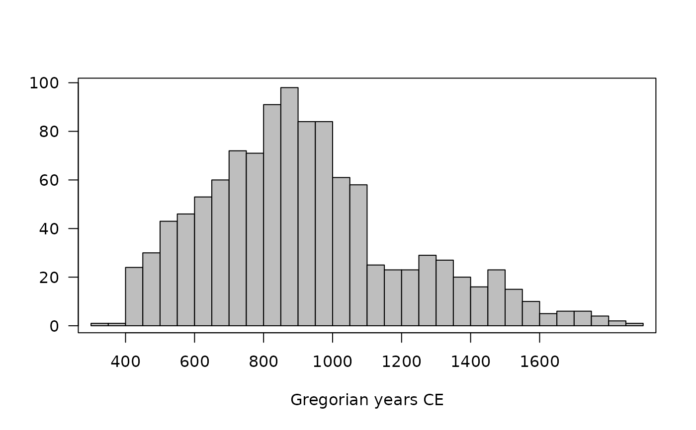
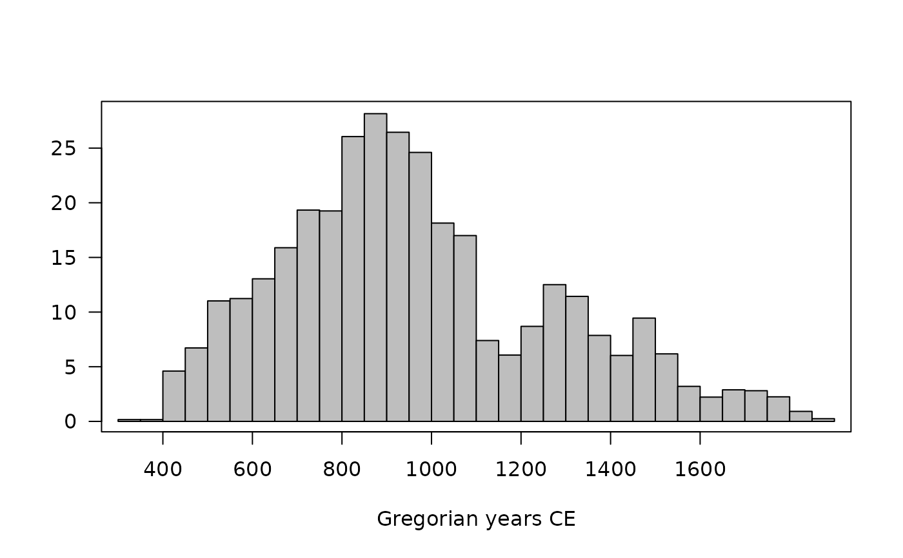
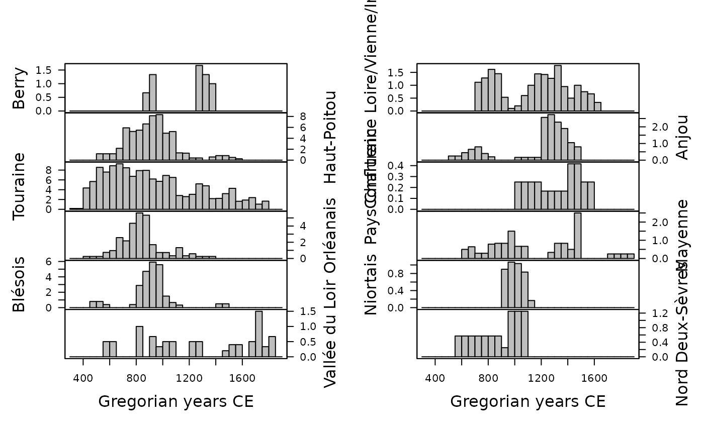
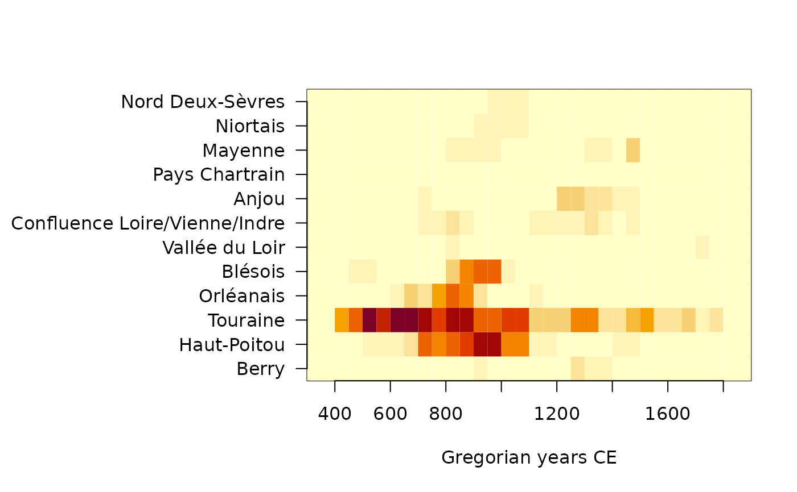
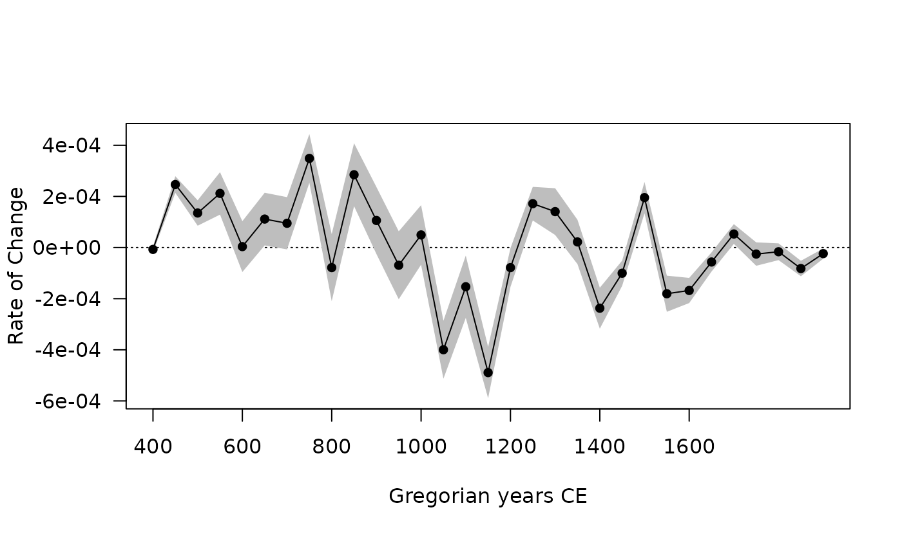
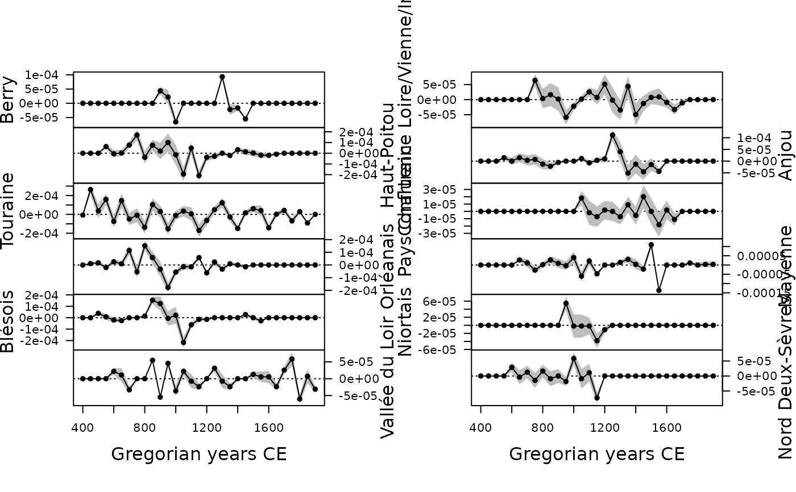

Plot Aoristic Analysis
Usage
# S4 method for AoristicSum,missing
plot(
x,
calendar = getOption("kairos.calendar"),
type = c("bar"),
flip = FALSE,
ncol = NULL,
main = NULL,
sub = NULL,
ann = graphics::par("ann"),
axes = TRUE,
frame.plot = axes,
panel.first = NULL,
panel.last = NULL,
...
)
# S4 method for AoristicSum
image(x, calendar = getOption("kairos.calendar"), ...)
# S4 method for RateOfChange,missing
plot(
x,
calendar = getOption("kairos.calendar"),
level = 0.95,
flip = FALSE,
ncol = NULL,
main = NULL,
sub = NULL,
ann = graphics::par("ann"),
axes = TRUE,
frame.plot = axes,
panel.first = NULL,
panel.last = NULL,
...
)Arguments
- x
An
AoristicSumobject.- calendar
A
TimeScaleobject specifying the target calendar (seecalendar()).- type
A
characterstring specifying whether bar or density should be plotted? It must be one of "bar" or "density". Any unambiguous substring can be given.- flip
A
logicalscalar: should the y-axis (ticks and numbering) be flipped from side 2 (left) to 4 (right) from series to series whenfacetis "multiple"?- ncol
An
integerspecifying the number of columns to use whenfacetis "multiple". Defaults to 1 for up to 4 series, otherwise to 2.- main
A
characterstring giving a main title for the plot.- sub
A
characterstring giving a subtitle for the plot.- ann
A
logicalscalar: should the default annotation (title and x and y axis labels) appear on the plot?- axes
A
logicalscalar: should axes be drawn on the plot?- frame.plot
A
logicalscalar: should a box be drawn around the plot?- panel.first
An an
expressionto be evaluated after the plot axes are set up but before any plotting takes place. This can be useful for drawing background grids.- panel.last
An
expressionto be evaluated after plotting has taken place but before the axes, title and box are added.- ...
Further parameters to be passed to
panel(e.g. graphical parameters).- level
A length-one
numericvector giving the confidence level.
Value
plot() is called it for its side-effects: it results in a graphic being
displayed (invisibly returns x).
See also
Other plotting methods:
plot_event,
plot_fit,
plot_mcd,
plot_time()
Examples
## Data from Husi 2022
data("loire", package = "folio")
## Get time range
loire_range <- loire[, c("lower", "upper")]
## Calculate aoristic sum (normal)
aorist_raw <- aoristic(loire_range, step = 50, weight = FALSE)
plot(aorist_raw, col = "grey")

## Calculate aoristic sum (weights)
aorist_weighted <- aoristic(loire_range, step = 50, weight = TRUE)
plot(aorist_weighted, col = "grey")

## Calculate aoristic sum (weights) by group
aorist_groups <- aoristic(loire_range, step = 50, weight = TRUE,
groups = loire$area)
plot(aorist_groups, flip = TRUE, col = "grey")

image(aorist_groups)

## Rate of change
roc_weighted <- roc(aorist_weighted, n = 30)
plot(roc_weighted)

## Rate of change by group
roc_groups <- roc(aorist_groups, n = 30)
plot(roc_groups, flip = TRUE)
